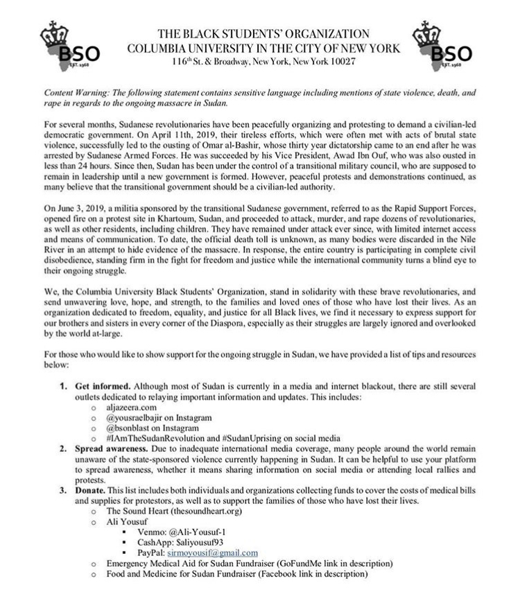

Sudan
What happened during Sudan's revolution, and ways you can help.
What Happened…
Courtesy of Tasgot Bas Archives
“The peaceful protests began small-scale on December 13th, when protests were held in Eldamazin. These coincided with a teacher strike in the White Nile State. Days later, the protests were happening all around the country, in response to prices of fuel and bread rising ridiculously. Protests soon centered around a demand for the fall of the (former) President Omar AlBashir’s 30-year-long regime, although these demands were not at all new. They continued into 2019, all the while being met with violent backlash from the government’s military. On the 6th of April the Sudanese Professionals Association called for a ‘million man’ march throughout the capital city, Khartoum, with an end location of the Military Headquarters. Hundreds of thousands of civilians answered the call, and turned the Military Headquarters into a sit-in location, vowing to remain there until the civilians’ demands were met. On the 11th of April, Omar AlBashir was ousted from the presidency and placed under house arrest by the military. This should have been a revolutionary change for the country, but we fear it may have been part of a much larger plan. Protesters remained at the sit-in, true to their word, until they were brutally and forcefully dispersed by militia forces on what was coined the Sudan Massacre of June 3rd.
More than a thousand people lost their lives fighting for our nation, and for the majority of the time the world was silent. We need to spread the voices of the people in Sudan as they currently cannot do so themselves, due to a government orchestrated TOTAL media blackout. This site will hopefully bring insight to both Sudanese and Non-Sudanese individuals about the tragic events that have taken place, but also showcase the glorious moments of our revolution and our nation’s rebuilding. We aim to provide a reliable platform through which more people can become informed about our current situation, about Sudan in general, and find out how they can help.”
Ways You Can Help!
Here's a list of links you can hit! Courtesy of Columbia BSO and Bashir Abdulkareem.

Stay Updated!
Tasgot Bas Archives
Follow Tasgot Bas Archives.
Al Jazeera
Follow Al Jazeera's website.
@YousraElbagir
Follow @YousraElbagir on Instagram.
@BSOnBlast
Follow @BSOnBlast on Instagram.
Donate!
| Service | Send to |
|---|---|
| Venmo | Ali-Yousaf-1 |
| Cash App | $aliyousaf93 |
| PayPal | sirmoyousif@gmail.com (link to PayPal) |